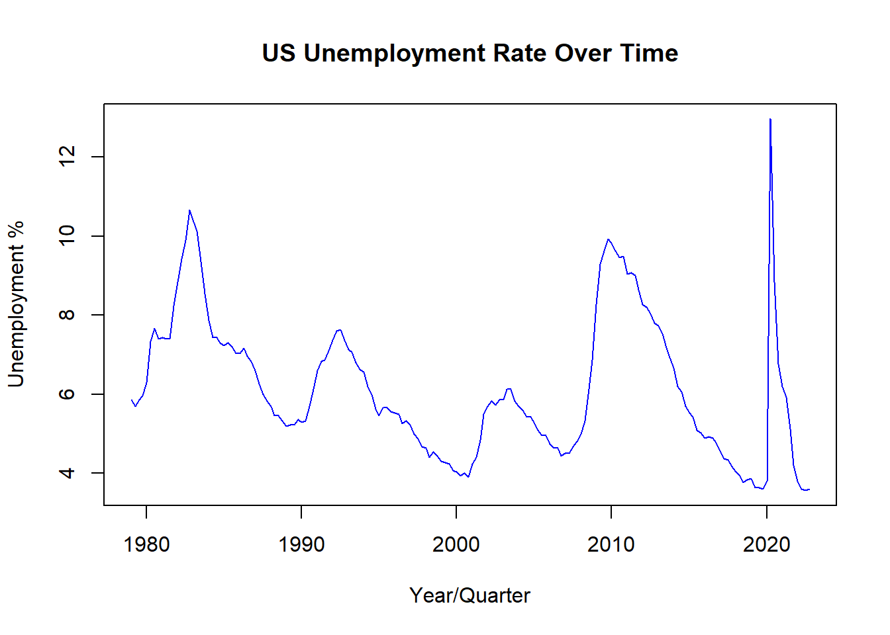
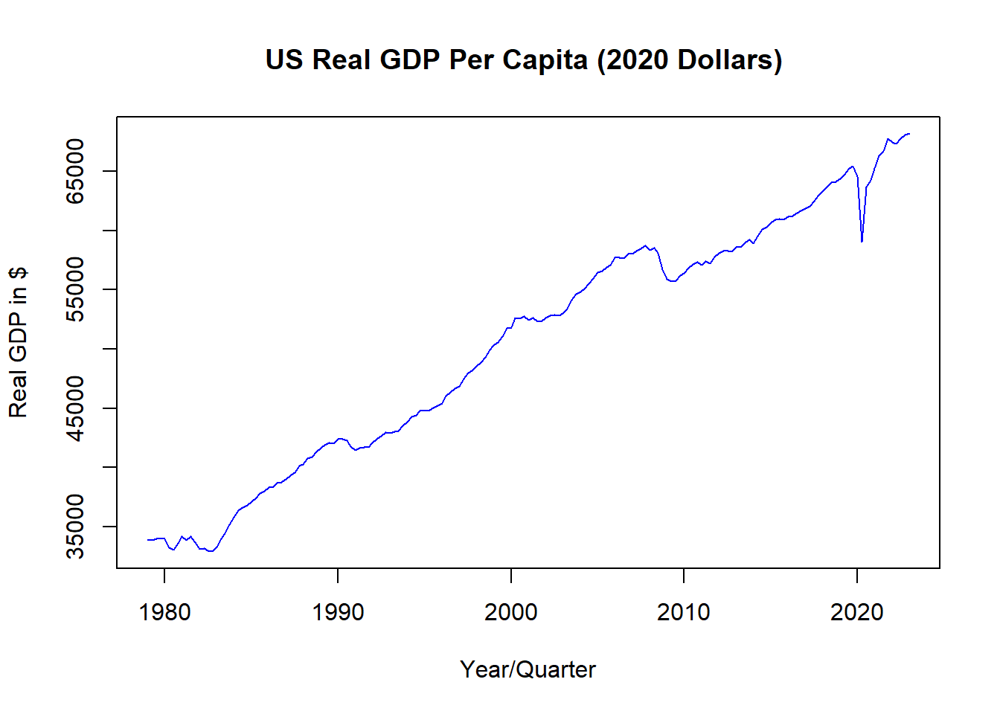
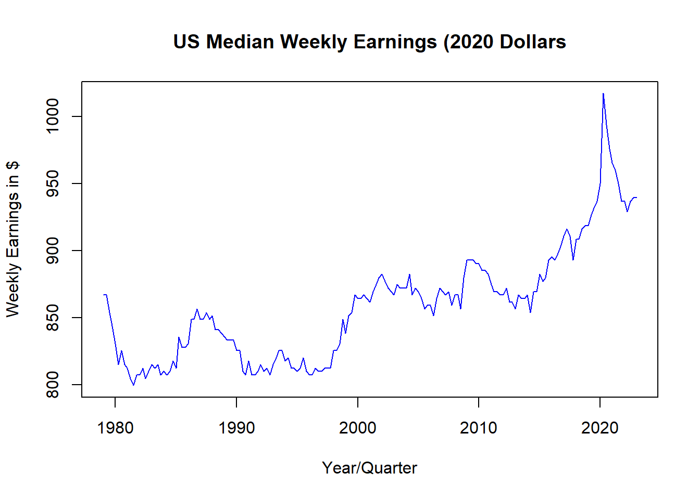
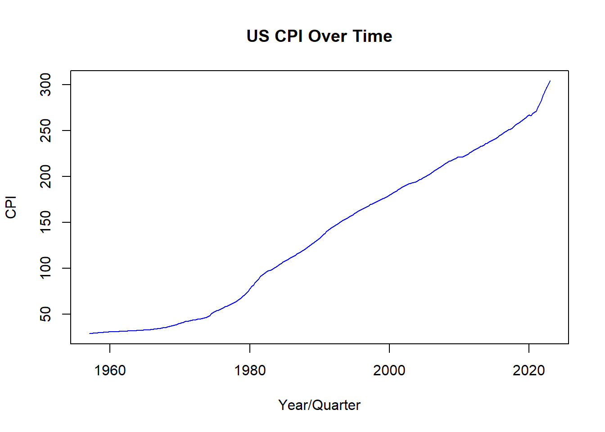
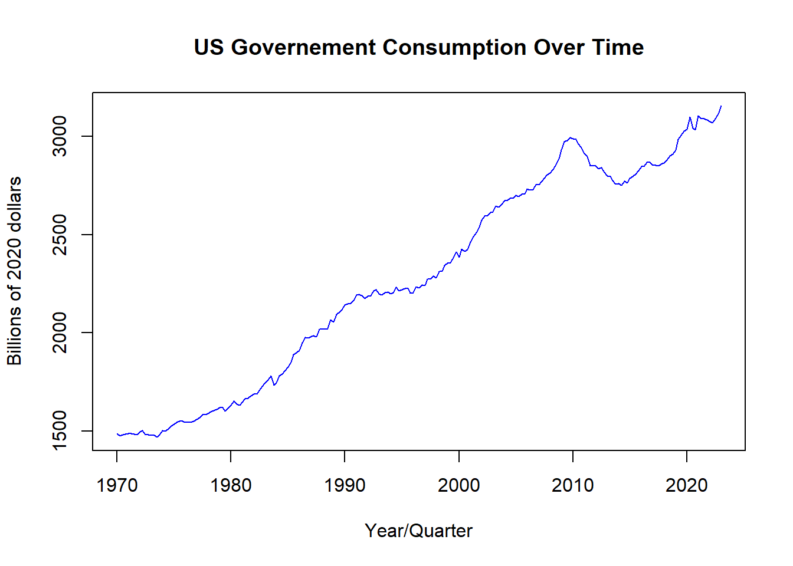
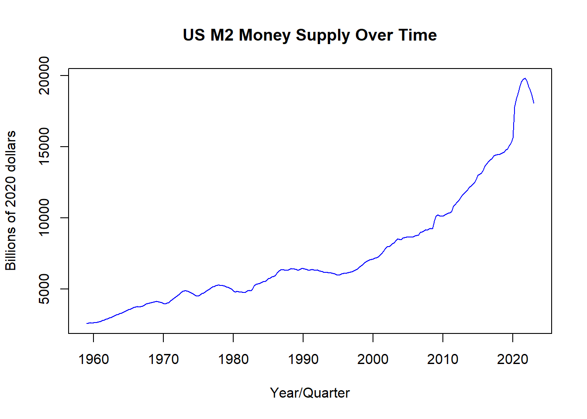

The goal of this research projectis to analyze the impact of unconditional government stipends on the U.S. economy, such as stimulus checks. To identify these effects I will analyze the effects of the stimulus checks and increased unemployment benefits issued by the US government in the wake of the COVID-19 pandemic.
This is an important topic as inequality rises direct government action may become increasingly necessary. Increased taxation on the rich and targeted government programs can only do so much to help those at the lower and middle ends of income. Especially as the groups in need of help become larger and their needs more diverse, the high administrative costs of judging who gets the benefits and what they are applicable to may become untenable. In this case, regular stimulus payments or higher unemployment benefits may become necessary to the continued economic health of the country. However, without knowing the effects of these methods, it is difficult to say whether or not they would do more harm than good.
Data
For the purpose of this analysis data the United States Federal Reserve will be utilized. This source uses government data and is considered highly reliable. A potential issue is the information available being limited by the frequency with which the government collects data. To counter this, the estimates will use a long history and quarterly data which is the most frequent commonly available data.
The core factors chosen, median income, gdp per capita, and unemployment, were chosen for widely being considered to be strong indicators of economic health. An estimated four lags are used as this is quarterly data so by incorporating four lags seasonal effects are adequately accounted for.
Median income is chosen over average income as, due to income disparity in the united states, there are large distortions in the average compared to the median. As stimulus payments and increased unemployment benefits are likely to more significantly impact lower income individuals it was determined that the median income would prove more suitable
GDP per capita is selected as it accounts for fluctuations in population over time instead of including effects that could be simple shifts in total population
Unemployment is utilized at it is of paramount concern in either confirming or assuaging concerns that, with relatively less incentive to work, that a portion of the population will elect not to work.
#load requisite packageslibrary(fredr)
Warning: package 'fredr' was built under R version 4.2.3
library(zoo)
Attaching package: 'zoo'
The following objects are masked from 'package:base':
as.Date, as.Date.numeric
library(dplyr)
Attaching package: 'dplyr'
The following objects are masked from 'package:stats':
filter, lag
The following objects are masked from 'package:base':
intersect, setdiff, setequal, union
#set key for accessing FRED datafredr_set_key("f1d6de070cd07cd6028872a3bc573657")#Load in Fred data#Real GFP Per Capita and Unemployment Rate and median earningsrgdpcap =fredr(series_id ="A939RX0Q048SBEA")urate =fredr(series_id ="UNRATE")mearn =fredr(series_id ="LES1252881600Q")#keep only unemployment rate and date to avoid errorsurate =subset(urate, select =c(date, value))#Change unemployment data to quarterlyurate = urate %>%group_by(date =format(as.yearqtr(date, "%b-%Y"), "%YQ%q")) %>%summarise_all(mean)#pull only needed valuesrgdpcap =subset(rgdpcap, select =c(date, value))#rename column names to be more easily interpretedcolnames(rgdpcap) =c("Date", "Real GDP Per Capita")#Change date to quarters to keep consistentrgdpcap$Date =as.yearqtr(rgdpcap$Date,format ="%Y-%m-%d")#rename column names to be more easily interpretedcolnames(urate) =c("Date", "Unemployment Rate %")#pull only needed valuesmearn =subset(mearn, select =c(date, value))#rename column names to be more easily interpretedcolnames(mearn) =c("Date", "Weekly Earnings")#Change date to quarters to keep consistentmearn$Date =as.yearqtr(mearn$Date,format ="%Y-%m-%d")#problem#RGDP and income are in different chained values#solution, divide both by the relative CPI value to readjust to same real dollar#average CPI in 2012 is 229.594#average CPI in 2020 is 258.811#average CPI in 1982-1984 dollars is 100#formula to use, (CPI in new chain year * real value)/CPI in old chain year#adjust both to 2020 dollarsrgdpcap$`Real GDP Per Capita`= (rgdpcap$`Real GDP Per Capita`*258.811)/229.594mearn$`Weekly Earnings`= (mearn$`Weekly Earnings`*258.811)/100#now that those values are about correct#equalize length of data#keep only values past the date of the newest data series#keep only values before 2023 as mearn doesn't have 2023 dataurate = urate %>%filter(urate$Date >='1979 Q1')urate = urate %>%filter(urate$Date <'2023 Q1')#adjust rgdpcaprgdpcap = rgdpcap %>%filter(rgdpcap$Date >='1979 Q1')#values are all now equalized#urate date neded up as not a date so fix thaturate$Date =as.yearqtr(urate$Date, format ="%YQ%q")#visually demonstrate valuesplot(urate$Date , urate$`Unemployment Rate %`, type ="l", main ="US Unemployment Rate Over Time", xlab ="Year/Quarter", ylab ="Unemployment %", col ="blue")

plot(rgdpcap$Date , rgdpcap$`Real GDP Per Capita` , type ="l", main ="US Real GDP Per Capita (2020 Dollars) ", xlab ="Year/Quarter", ylab ="Real GDP in $", col ="blue")

plot(mearn$Date , mearn$`Weekly Earnings`, type ="l", main ="US Median Weekly Earnings (2020 Dollars", xlab ="Year/Quarter", ylab ="Weekly Earnings in $", col ="blue")

Model and Hypothesis
The model utilized will be a trivariate SVAR with the following specification
Where inc is median income, gdp is GDP per capita, uem is unemployment
α terms are present to indicate present relationships between the variables
β1,0 β2,0 β3,0 are each intercept terms
all other β terms are a multiplier on the value of prior period values on the present
… indicates that the variables in question follow a repeating pattern, in this case lags from 1 to 4 periods
μ is an error term
t subscripts indicate the time period relative to the present. E.g. t-1 indicates the value of the variable one period in the past.
I would also like to in my final report include a control variable for COVID as COVID doubtless impacted the economy in a way unrelated to any other changes.
This model goes to four lags as the data is quarterly and this ensures that seasonality effects are removed. The model will serve to identify the effects of shocks on the US economy stemming from stimulus payments as stimulus payments may be treated as one period shocks to income and the impulse response function will tell us the effects that such payments have on the economy.
Estimating the effects of increased unemployment benefits is more difficult but can be achieved by treating these as a wage floor as presumably if one would be paid less than unemployment benefits one will choose not to work except as necessary to maintain benefits. Thus median income can be replaced with minimum wage in the above calculation and high levels of unemployment benefits treated as an effective increase in the minimum wage. As an alternative, the effects of a universal basic income program may be estimated as a permanent increase in income to all members of society regardless of their employment status.
These are all relevant to the economic situation in the United States going forward. A combination of stagnating wages, low minimum wage, and increasing income inequality threatens to force more forceful government action to avert economic crisis stemming from a lower-class which no longer lives at a subsistence level. While this state has not yet been reached it is a looming threat which must be addressed. The number of government programs to help low income individuals is immense but oftentimes much time and energy is spent ensuring that the “undeserving” are not given these benefits which can lead to those in need being rejected or ending up in worse circumstances due to long delays in receiving assistance. All of the proposed methods due to their weak targeting requirements would provide relief more rapidly and potentially aid in economic growth more than programs targeted at covering expenses related to a specific aspect of life.
Loading in additional data to incorporate into full model
#load in CPI, as Inflation is a key target of the FEDCPI =fredr(series_id ="CPILFESL")#select only needed dataCPI =subset(CPI, select =c(date, value))#Adjust CPI to quarterlyCPI = CPI %>%group_by(date =format(as.yearqtr(date, "%b-%Y"), "%YQ%q")) %>%summarise_all(mean)#rename column names to be more easily interpretedcolnames(CPI) =c("Date", "CPI")CPI$Date =as.yearqtr(CPI$Date, format ="%YQ%q")plot(CPI$Date , CPI$CPI, type ="l", main ="US CPI Over Time", xlab ="Year/Quarter", ylab ="CPI", col ="blue")

#should maybe include M2 money supply as a possible vector#issue with M2 money suppl defiintion being changed#large upswing in 2020 that is not due to real changes#Also truncates data 2 years later#large information loss given already small number of observations#do not include at present #load in government consumption spendinggovex =fredr(series_id ="A955RX1Q020SBEA")#select only needed datagovex =subset(govex, select =c(date, value))#Re-chain to 2020 dollarsgovex$value = (govex$value*258.811)/229.594#rename column names to be more easily interpretedcolnames(govex) =c("Date", "GovSpend in Billions")govex$Date =as.yearqtr(govex$Date, format ="%YQ%q")plot(govex$Date , govex$`GovSpend in Billions`, type ="l", main ="US Governement Consumption Over Time", xlab ="Year/Quarter", ylab ="Billions of 2020 dollars", col ="blue")

#load in real M2M2 =fredr(series_id ="M2REAL")#select only needed dataM2 =subset(M2, select =c(date, value))#Re-chain to 2020 dollarsM2$value = (M2$value*258.811)/100#adjust to be quarterlyM2 = M2 %>%group_by(date =format(as.yearqtr(date, "%b-%Y"), "%YQ%q")) %>%summarise_all(mean)#rename column names to be more easily interpretedcolnames(M2) =c("Date", "M2 Money Supply")M2$Date =as.yearqtr(M2$Date, format ="%YQ%q")plot(M2$Date , M2$`M2 Money Supply`, type ="l", main ="US M2 Money Supply Over Time", xlab ="Year/Quarter", ylab ="Billions of 2020 dollars", col ="blue")

Below is a temporary implementation of the SVAR which will evolve over time as I build the model to be more detailed and robust.
#Onlyusing mearn, rgdpcap, and urate in initial setup, will include other#information when basic model is functional#equalize length of data#keep only values past the date of the newest data series#keep only values before 2023mearn = mearn %>%filter(mearn$Date >='1979 Q1')mearn = mearn %>%filter(mearn$Date <'2023 Q1')rgdpcap = rgdpcap %>%filter(rgdpcap$Date >='1979 Q1')rgdpcap = rgdpcap %>%filter(rgdpcap$Date <'2023 Q1')#CPI = CPI %>% filter(CPI$Date >= '1979 Q1')#CPI = CPI %>% filter(CPI$Date < '2023 Q1')#govex = govex %>% filter(govex$Date >= '1979 Q1')#govex = govex %>% filter(govex$Date < '2023 Q1')#M2 = M2 %>% filter(M2$Date >= '1979 Q1')#M2 = M2 %>% filter(M2$Date < '2023 Q1')#set up y matrixy =cbind(urate, mearn[,2])y =cbind(y, rgdpcap[,2])#y = cbind(y, CPI[,2])#y = cbind(y, govex[,2])#y = cbind(y, M2[,2])